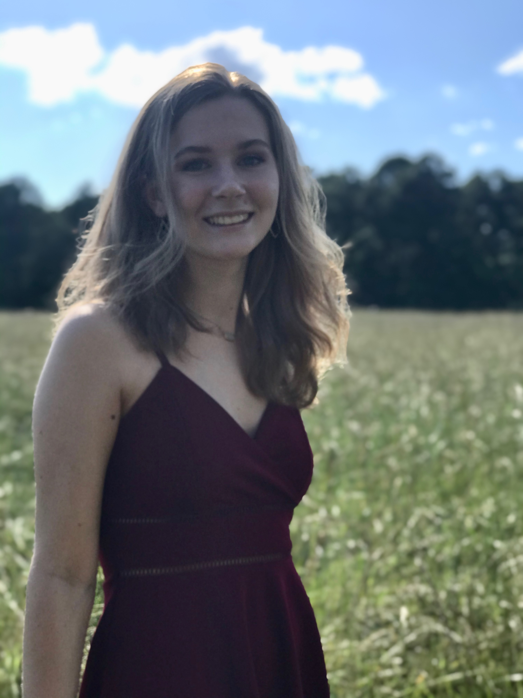

ELLA HAMMOND
Watercolor and Oil Painting

About me
I am a junior at UNC Chapel Hill majoring in Neuroscience. I took an interest in drawing and watercolor at around ten years old and starting taking art classes outside of school. I usually make art for fun or to gift to others; every Christmas I make a handpainted ornament for my parents. Lately, I have been recreating my favorite album covers on mini canvases. All of these pieces and more can be viewed in the Portfolio section. Thanks for visiting my site!